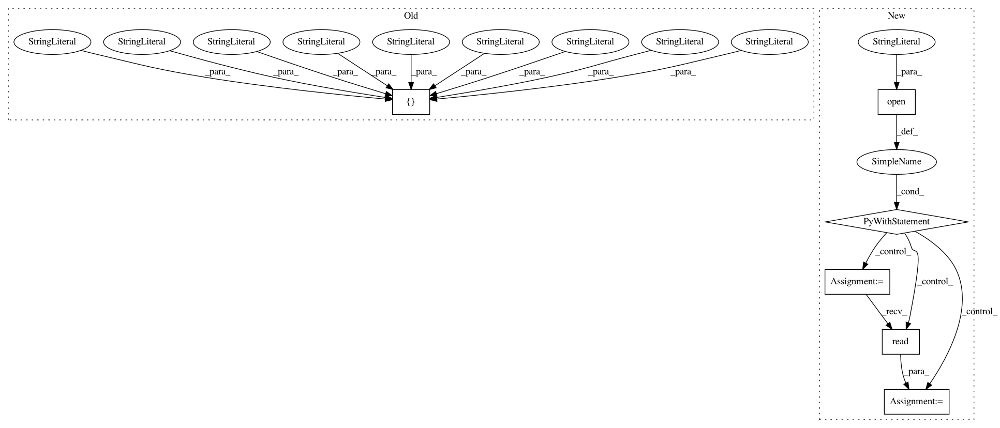

60c1bb93d9a424ab4881de9f2afc4edb848d4fc7,setup.py,,,#,108
Before Change
},
install_requires=reqs_from_file,
python_requires=">=3.6.0",
classifiers=[
"Programming Language :: Python",
"Programming Language :: Python :: 3",
"Programming Language :: Python :: 3.6",
"Programming Language :: Python :: 3.7",
"Programming Language :: Python :: 3.8",
"Development Status :: 3 - Alpha",
"Intended Audience :: Science/Research :: Developers",
"Operating System :: POSIX :: Linux",
"License :: OSI Approved :: Mozilla Public License 2.0 (MPL 2.0)",
"Topic :: Software Development :: Libraries :: Python Modules :: Speech :: Sound/Audio :: Multimedia :: Artificial Intelligence",
])
// for some reason having tensorflow in "install_requires"
// breaks some of the dependencies.
After Change
// tf_req = [r for r in reqs_from_file if r.startswith("tensorflow")]
// requirements = {"install_requires": reqs_without_tf, "pip_install": tf_req}
with open("README.md", "r", encoding="utf-8") as readme_file:
README = readme_file.read()
setup(
name="TTS",
version=version,
url="https://github.com/mozilla/TTS",
In pattern: SUPERPATTERN
Frequency: 3
Non-data size: 6
Instances
Project Name: mozilla/TTS
Commit Name: 60c1bb93d9a424ab4881de9f2afc4edb848d4fc7
Time: 2021-01-25
Author: erogol@hotmail.com
File Name: setup.py
Class Name:
Method Name:
Project Name: google/tangent
Commit Name: 5cf5f2eac7a6a60959db76b744e5a2ac50305968
Time: 2018-05-16
Author: mrocklin@gmail.com
File Name: setup.py
Class Name:
Method Name:
Project Name: NeuromorphicProcessorProject/snn_toolbox
Commit Name: 8e2dcb85db4def11e2361cc945f0331969f15b27
Time: 2017-06-24
Author: bodo.rueckauer@gmail.com
File Name: setup.py
Class Name:
Method Name: